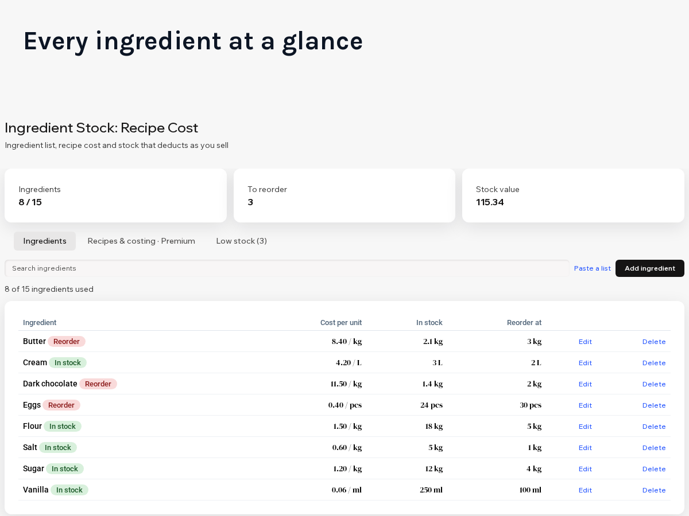

Ingredient Stock: Recipe Cost
Know what each dish costs and what to reorder
- One ingredient list with cost and stock
- Paste a supplier list straight in
- Premium costs each dish and deducts stock
- Free covers 15 ingredients

What it does
You buy flour, butter and eggs; you sell cakes and croissants. The two lists never meet, so the food cost of a dish stays a guess and a reorder is a walk around the kitchen.
This app keeps one list of ingredients: unit, cost per unit, stock and reorder level. Low stock shows every ingredient at or below its level with the shortfall. If typing 30 rows is not your idea of an afternoon, paste a supplier's list into the import box.
Premium adds the costing and the automation. Pick a product, enter how much of each ingredient it uses, and the app shows the dish cost and the margin against the product price. When a paid order comes in, it reads the line items, matches each product to its recipe and subtracts the ingredients: three croissants take three times the butter, flour and so on. Each deduction stops at zero and goes into the stock log, so you can see what came off and when.
The reorder sheet takes each low ingredient back to par.
Free covers 15 ingredients. Premium removes the cap and adds recipes, deduction and the reorder sheet, for $6 a month or $5 a month billed yearly.
The app runs in your site's dashboard. No scripts on your live site, nothing sent to your customers.
Price
Free
Premium
$6/month, or $5/month billed yearly ($60/year). Unlimited ingredients, recipe costing and margin, automatic deduction, printable reorder sheet